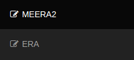

How to use the portal
Using the portal is very easy.
Steps
1. From the tab at the top-left corner of the screen, choose either MERRA2 or ERA.

2. Then in order to view the MAP and decide the latitude and longitude, click on the Click Here for MAP link.
3. Zoom into the map to the location you seek. The "Nodes" will resolve themselves to RED colored pointers. Click on the pointers to see and obtain the respective LAT and LON.
Before pointer click

After pointer click

4. After obtaining this value, enter the same in the LATITUDE and LONGITUDE boxes respectively.
5. Select the desired start and end dates (obviously STARTDATE < ENDDATE).

6. Select the desired parameters.

7. Submit and wait.
8. An alert button box will appear after the excel file is ready for download.

9. Click on OK to download. The file will get downloaded.